Chopper is a basically static power electronics device which converts fixed dc voltage / power to variable dc voltage or power. It is nothing but a high speed switch which connects and disconnects the load from source at a high rate to get variable or chopped voltage at the output.
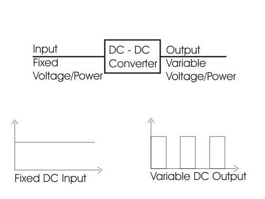
Chopper can increase or decrease the dc voltage level at its opposite side. So, chopper serves the same purpose in dc circuit transfers in case of ac circuit. So it is also known as DC transformer.
Devices used in Chopper
Low power application : GTO, IGBT, Power BJT, Power MOSFET etc.
High power application : Thyristor or SCR.
These devices are represented as a switch in a dotted box for simplicity. When it is closed current can flow in the direction of arrow only.
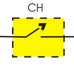
1) Step down Chopper : Step down chopper as Buck converted is used to reduce the i/p voltage level at the output side. Circuit diagram of a step down chopper is shown in the adjacent figure.
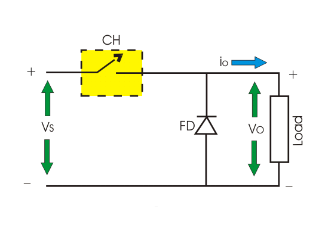
When CH is turned ON, Vs directly appears across the load as shown in figure. So VO = VS.
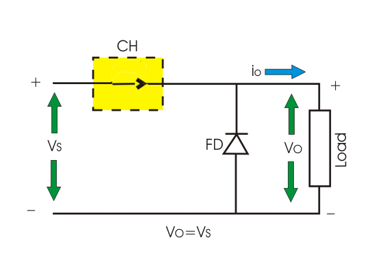
When CH is turned off, Vs is disconnected from the load. So output voltage VO = 0.
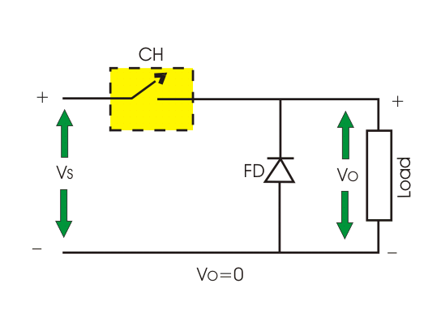
The voltage waveform of step down chopper is shown below:
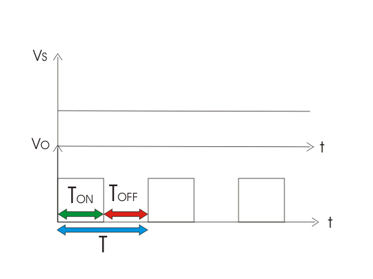
TON → It is the interval in which chopper is in ON state.
TOFF → It is the interval in which chopper is in OFF state.
VS → Source or input voltage.
VO → Output or load voltage.
T → Chopping period = TON + TOFF
Operation of Step Down Chopper with Resistive Load
When CH is ON, VO = VS
When CH is OFF, VO = 0
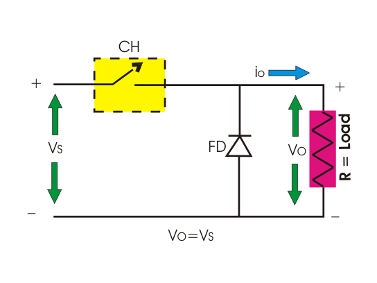
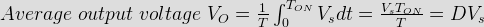
Where, D is duty cycle = TON/T.
TON can be varied from 0 to T, so 0 ≤ D ≤ 1. Hence output voltage VO can be varied from 0 to VS.

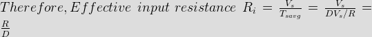
So, we can conclude that output voltage is always less than the input voltage and hence the name step down chopper is justified.
The output voltage and current waveform of step down chopper with resistive load is shown below.
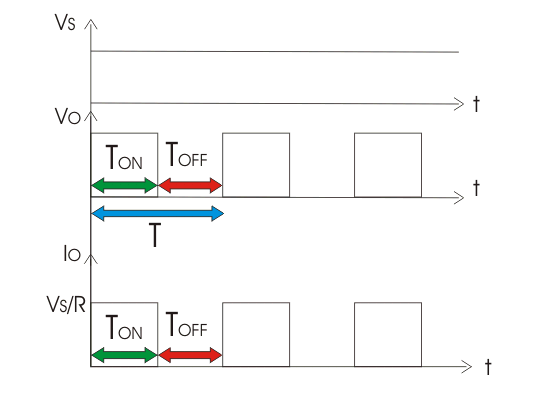
Operation Of Step Down Chopper with Inductive Load
When CH is ON, VO = VS
When CH is OFF, VO = 0
During ON time of chopper
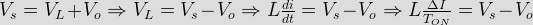
Therefore, peak to peak load current,
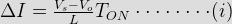
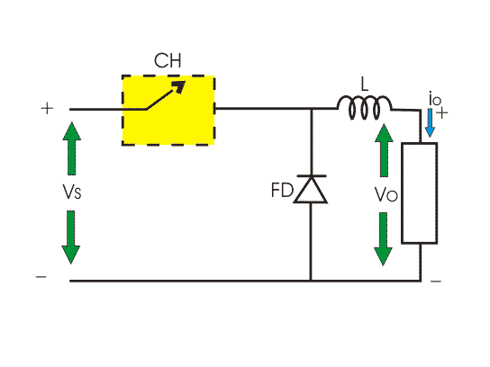
During OFF Time of Chopper
If inductance value of L is very large, so load current will be continuous in nature. When CH is OFF inductor reverses its polarity and discharges. This current freewheels through diode FD.
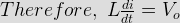
")
By equating (i) and (ii)
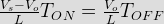
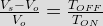
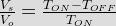
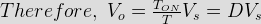
So, from (i) we get,
![\Delta I = \frac{V_s-DV_s}{L}DT\left[Since,\;D=\frac{T_{ON}}{T}\right]=\frac{V_s(1-D)D}{Lf}\left[f=\frac{1}{T}=Chopping\;Frequency\right]](12.png "\Delta I = \frac{V_s-DV_s}{L}DT\left[Since,\;D=\frac{T_{ON}}{T}\right]=\frac{V_s(1-D)D}{Lf}\left[f=\frac{1}{T}=Chopping\;Frequency\right]")
The output voltage and current waveform of step down chopper with inductive load is shown below
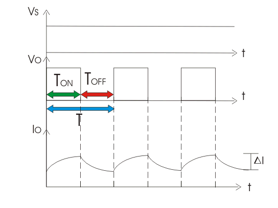
2) Step up Chopper or Boost Converter
Step up chopper or boost converter is used to increase the input voltage level of its output side. Its circuit diagram and waveforms are shown below in figure.
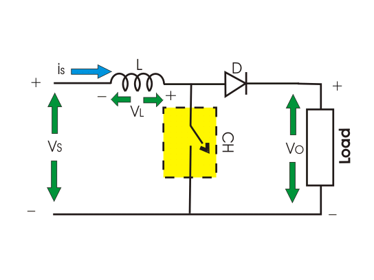
Operation of Step up Chopper
When CH is ON it short circuits the load. Hence output voltage during TON is zero. During this period inductor gets charged. So, VS = VL
")
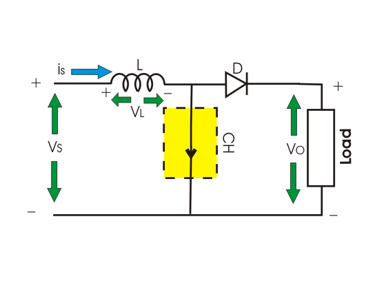
Where ΔI is the peak to peak inductor current.
When CH is OFF inductor L discharges through the load. So, we will get summation of both source voltage VS and inductor Voltage VL as output voltage, i.e.
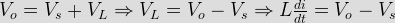
")

Now, by equating (iii) & (iv),

/T}")
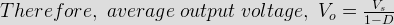
As we can vary TON from 0 to T, so 0 ≤ D ≤ 1. Hence VO can be varied from VS to ∞. It is clear that output voltage is always greater than the input voltage and hence it boost up or increase the voltage level.
Buck-Boost Converter or Step Up Step Down Converter
With the help of Buck-Boost converter we can increase or decrease the input voltage level at its output side as per our requirement. The circuit diagram of this converter is shown below.
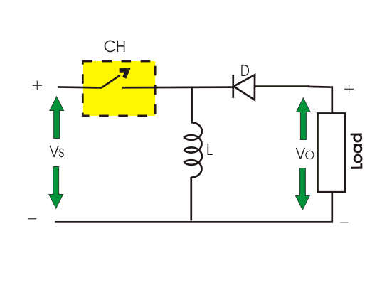
Operation of Buck-Boost Converter
When CH is ON source voltage will be applied across inductor L and it will be charged.
So VL = VS
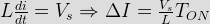
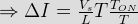
![\Delta I = \frac{DV_s}{Lf}\left[Since,\;\frac{T_{ON}}{T}=D\;and\;\frac{1}{T}=f=Chopping\;Frequency\right]\cdot\cdot\cdot\cdot(v)](21.png "\Delta I = \frac{DV_s}{Lf}\left[Since,\;\frac{T_{ON}}{T}=D\;and\;\frac{1}{T}=f=Chopping\;Frequency\right]\cdot\cdot\cdot\cdot(v)")
When chopper is OFF inductor L reverses its polarity and discharges through load and diode, So.
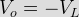
")
By evaluating (v) and (vi) we get,
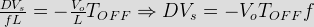
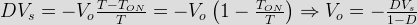
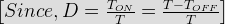
Taking magnitude we get,

D can be varied from 0 to one.
When, D = 0; VO = 0
When D = 0.5, VO = VS
When, D = 1, VO = ∞
Hence, in the interval 0 ≤ D ≤ 0.5, output voltage varies in the range 0 ≤ VO ≤ VS and we get step down or Buck operation.
Whereas, in the interval 0.5 ≤ D ≤ 1, output voltage varies in the range VS ≤ VO ≤ ∞ and we get step up or Boost operation.
According to direction of output voltage and current
Semiconductors devices used in chopper circuit are unidirectional. But arranging the devices in proper way we can get output voltage as well as output current from chopper in our required direction. So, on the basis of this features chopper can be categorized as follows :
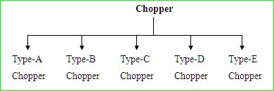
Before detailed analysis some basic idea regarding VO – IO quadrant is required here.
The directions of IO and VO marked in the figure – 1 is taken as positive direction.
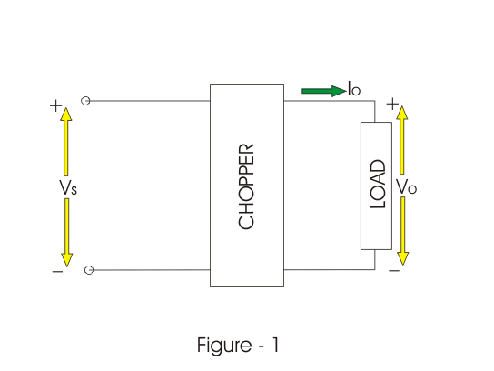
If output voltage (VO) and output current (IO) follows the direction as marked in figures then the chopper operation will be restricted in the first quadrant of VO – IO plane. This type of operation is also known as forward motoring.
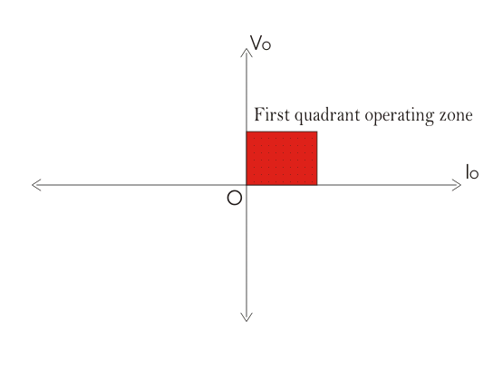
When output voltage (VO) follows the marked direction in fig. 1 but current flows in the opposite direction then VO is taken positive but IO as negative. Hence the chopper operates in the second quadrant of VO – IO plane. This type of operation is also known as forward braking.

It may also happen that both output voltage and current is opposite to the marked direction in figure – 1. In t his case both VO and IO are taken as negative. Hence chopper operation is restricted in third quadrant of VO-IO plane. This operation is called reverse motoring.

If output voltage is opposite to the marked direction in fig. 1. then it is taken as negative. But output current follows the direction as marked in fig. 1 and considered as positive. Hence chopper operates in 4th quadrant of VO – IO plane. This mode of operation is called reverse braking.\
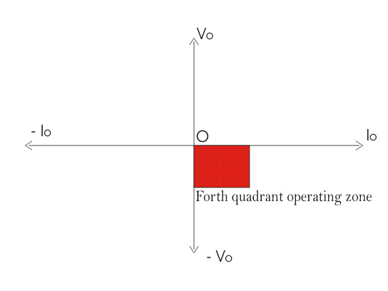
Now we can proceed to detailed analysis of different types of chopper. Some choppers operate in a single quadrant only, which are called single quadrant chopper. Some choppers operate in two quadrant also which are known as two quadrant chopper. It is also possible that a chopper operates in all the quadrants, which are known as 4-quadrant chopper.
Type-A Chopper
It is a single quadrant chopper whose operation is restricted in first quadrant of VO – IO plane. The circuit diagram is shown as below :
When CH is ON both VO & IO follows the direction as marked in the figures. So, both are taken as positive hence load power is positive which means power is delivered from source to land.
When CH is OFF current freewheels through diode. Hence VO is zero and IO is positive.
In type-A chopper it is seen that average value of VO and IO is always positive. This is also called step down chopper as average value of VO is less than the input voltage. This type of chopper is suitable for motoring operation.
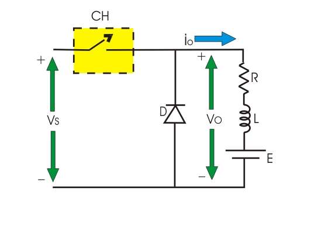

Type-B Chopper
This is also a single quadrant chopper operating in second quadrant of VO – IO plane. The circuit diagram is shown in the following figure.

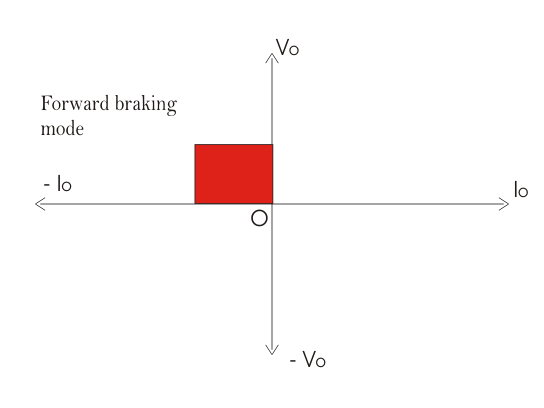
It is interesting to note that load must have a dc voltage source E for this kind of operation.
When CH is ON VO is zero but current flows in the opposite direction as marked in figure. When chopper is OFF
![V_O =\left[E+L\frac{di}{dt}-IR\right]](28.png "V_O =\left[E+L\frac{di}{dt}-IR\right]")
Which exceeds the source voltage VS. So current flows through diode D and treated as negative.
Hence current IO is always negative here but VO is positive (sometimes zero). So, power flows from load to source and operation of type-B chopper is restricted in second quadrant of VO – IO plane. This type of chopper is suitable for forward braking operation.
Type-C Chopper
This is a two quadrant chopper whose operation is bounded between first and second quadrant of VO - IO plane. This type of chopper obtained by connecting type-A and type-B chopper in parallel as shown in the figure.
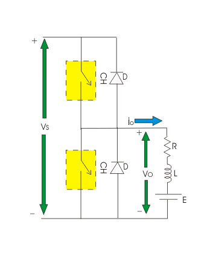
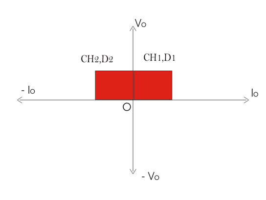
When CH1 is ON current flows through abcdefa and inductor L will be charged. Hence output voltage VO and current IO both will be positive. When CH1 is OFF, induction will discharge through D1 and current IO will flow through same direction with zero output voltage. So, we can see the operation of CH1 is nothing but the operation of type-A chopper by which we can operate a chopper in the first quadrant.
When CH2 is ON, output voltage VO will be zero but output current IO will flow in opposite direction of current shown in the figure and inductor will be charged up. When CH2 is OFF Output voltage
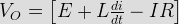
Which exceeds the value of source voltage VS. So current flows through diode D2 and treated as negative. Hence output voltage VO is always positive and output current IO is always negative here. We can see operation of CH2 is nothing but operation of type-B chopper by which we can operate the chopper in the second quadrant.
We can conclude that the operation of type-c chopper is the combined operation of type-A and type-B chopper. This type of chopper is suitable for both forward motoring and forward braking operation.
 by
by